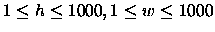
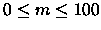
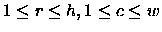

| Squares (II) |
The game of Squares is not well known in our region, but there are some fanatics who spend their whole day playing Squares, using boards as large as they can find. However, recently the International Squares Federation decided that the sides of a Squares board may not be larger than 1000 .
Squares is played by two players on a rectangular board, similar to a very big chess board. The fields are numbered from (1,1) at the bottom left
corner, to (1,w) at the bottom right corner and (h,w) at the top right
corner, where h and w are the height and width of the board. Usually, one of
the players decides the size of the board, and the other player makes the
first move.
A move consists of choosing a free field. This field is extended to the right
and to the top of the board to form a square as large as possible without
intersecting already occupied fields. The fields of this new square then
belong to the player who
made the move, and are no longer free. The game is finished when there are
no free fields left. However, it is possible for the players to decide to
end the game earlier.
The scoring rules are too complicated to explain here. The number of occupied
fields plays a role, but also the moment in the game at which those fields
were occupied by the player.
For beginning players, the best strategy is to try to occupy as many fields
as possible in each move. More experienced players will sometimes occupy
smaller squares for strategic reasons.
Write a program to support beginning players, which, given the size of the
board and the moves already made, indicates a field that must be chosen in
the next move to occupy a square that is as large as possible.
For each game, the input begins with a line with three numbers h, w,
and m, separated by a space, where h and w are the height and width of
the board (
), and m is the number of moves already made (
)
.
For each move, the input file contains one line with the row and
column (
)
of the field the player has chosen,
separated by a space. The move is legal according to the rules given
above, i.e., the field is free.
2 8 8 4 8 1 3 6 1 4 2 1 500 1000 2 1 1 1 501
5 2 4 game over